Ben Tennyson era um garoto comum até encontrar, dentro de uma cápsula caída do céu,
um dispositivo alienígena em forma de relógio: o Omnitrix. A partir daquele momento,
ele passou a poder se transformar em dezenas de espécies extraterrestres diferentes,
cada uma com poderes próprios, para enfrentar ameaças que nenhum humano sozinho
conseguiria deter.
Ao longo dos anos, o dispositivo original foi destruído, reconstruído e recalibrado
diversas vezes — dando origem às quatro eras exploradas neste Codex. Escolha uma
era na seção Omnitrix para ver o desenho do relógio daquele
período e girar o disco até encontrar cada transformação.
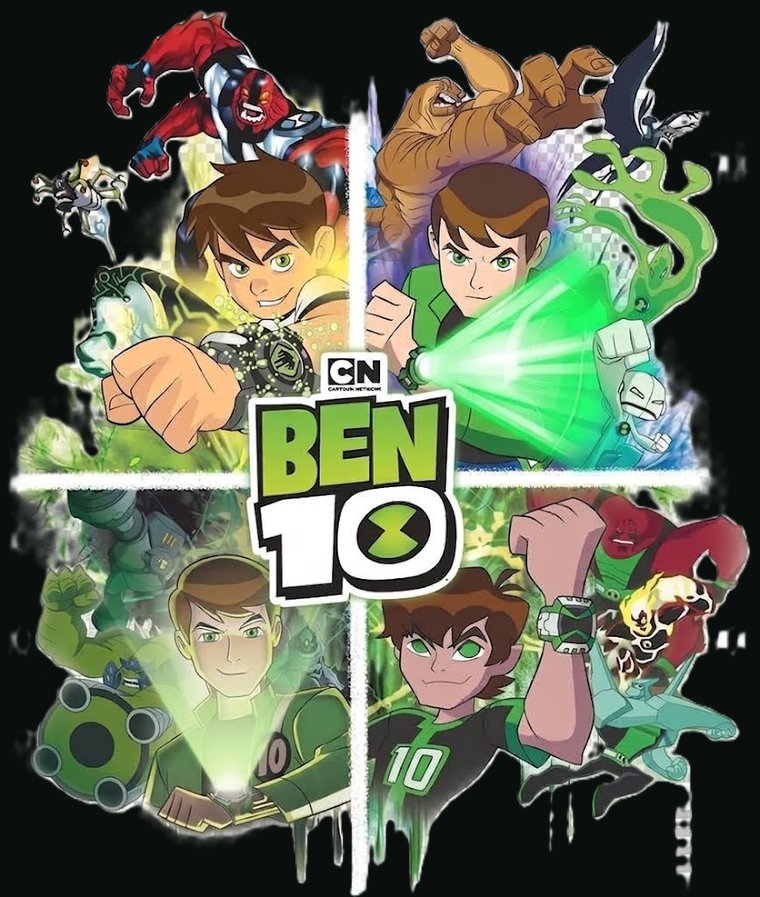
Aliados
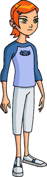
Gwen Tennyson — a prodígio da mana e feitiçaria
Gwen Tennyson
Características: altamente inteligente, disciplinada e uma híbrida de Anodita com afinidade natural para manipular a energia da Mana.
Feitos: dominou feitiços complexos estudando o livro de Hex e tornou-se uma das usuárias de magia mais poderosas de todo o universo.
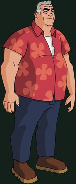
Max Tennyson (Vovô Max) — o lendário Encanador
Max Tennyson (Vovô Max)
Características: sábio, calmo e um lendário ex-Magistrado dos Encanadores com vasto conhecimento sobre o universo.
Feitos: derrotou Vilgax na juventude, liderou operações cruciais da polícia intergaláctica na Terra e serviu como o grande mentor de Ben e Gwen.
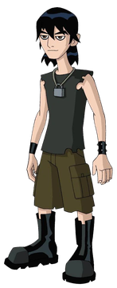
Kevin Levin — o garoto mutante instável
Kevin Levin (Clássico)
Características: um jovem Osmosiano rebelde e instável, capaz de absorver energia e matéria à custa de sua própria sanidade.
Feitos: absorveu os poderes do Omnitrix para se transformar no monstruoso "Kevin 11" e tornou-se um dos vilões mais temidos do herói.
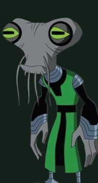
Azmuth — criador do Omnitrix
Azmuth
Características: o sarcástico e genial criador Galvaniano do Omnitrix, conhecido como a mente mais brilhante de cinco galáxias.
Feitos: projetou o relógio para preservar o DNA das espécies, consertou sua autodestruição e reconheceu Ben como o único portador digno.
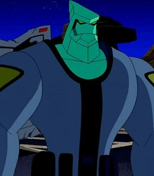
Tetrax Shard — o mercenário Petrosapien redimido
Tetrax Shard
Características: estrategista frio, mercenário altamente tecnológico e da mesma espécie do alienígena Diamante.
Feitos: ensinou a Ben a verdadeira responsabilidade do Omnitrix, ajudou a encontrar Azmuth e restaurou seu planeta natal, Petropia.
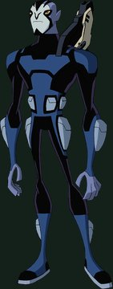
Rook Blonko — o novo parceiro Magistrado
Rook Blonko
Características: um metódico Revonnahgander mestre em artes marciais e focado inteiramente nas regras e protocolos.
Feitos: salvou Ben em inúmeras batalhas utilizando sua versátil Proto-Arma e alcançou rapidamente a patente de Magistrado.
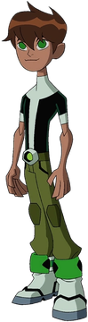
Ken Tennyson — o herdeiro do relógio
Ken Tennyson (Original)
Características: o impulsivo e rebelde filho de Ben 10.000, desesperado para provar seu valor heroico.
Feitos: recebeu um Omnitrix em seu décimo aniversário e ajudou a derrotar a monstruosa versão futura de Kevin 11.000.
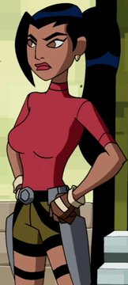
Kai Green — a empunhadora da Excalibur
Kai Green
Características: jovem corajosa, sarcástica e neta de Encanador, possuindo uma complexa relação de rivalidade afetiva com Ben.
Feitos: dominou artefatos místicos, empunhou a mítica espada Excalibur e tornou-se a futura esposa de Ben e mãe de Ken.
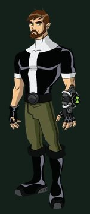
Ben 10.000 — o herói máximo do futuro
Ben 10.000 (Original)
Características: a versão adulta de Ben, inicialmente focada apenas no trabalho e distante de sua própria humanidade.
Feitos: desbloqueou 10.000 aliens, dominou o controle mestre mentalmente e derrotou vilões clássicos com extrema facilidade.
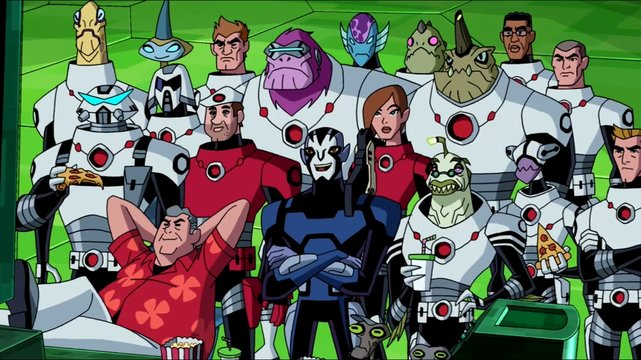
Encanadores (Plumbers) — a polícia cósmica
Encanadores (Plumbers)
Características: organização paramilitar intergaláctica focada em policiar o universo e proteger planetas de ameaças cósmicas.
Feitos: exilaram Vilgax, estruturaram imensas bases subterrâneas secretas na Terra e mantiveram acordos de paz intergalácticos.
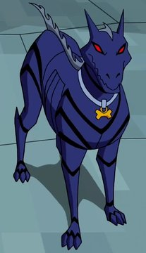
Zed — a predadora de estimação
Zed
Características: uma ágil e feroz cadela alienígena da espécie Anubiana Baskurr.
Feitos: foi a primeira criatura a suportar o Nemetrix caçando os aliens de Ben, sendo mais tarde adotada por Kevin Levin.
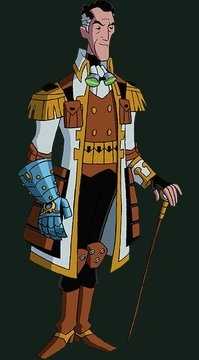
Professor Paradoxo — o mestre do tempo e do espaço
Professor Paradoxo (Professor Paradox)
Características: um ex-cientista calmo e atemporal que compreende todo o contínuo espaço-tempo.
Feitos: guiou Ben pelas Guerras Temporais, frustrou os planos do vilão Eon e manteve a estabilidade de todo o multiverso.
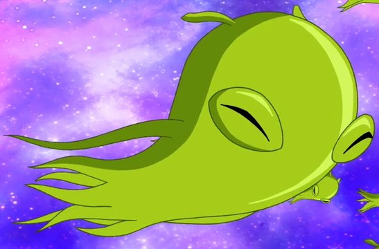
Skurd — o Slimebioto parasita
Skurd
Características: ser microscópico, gelatinoso e sarcástico que sobrevive alimentando-se do DNA armazenado no Omnitrix.
Feitos: gerou armas e membros mutantes para Ben, e usou o DNA do Alien X para criar uma espada que salvou o universo da Aniquilação.
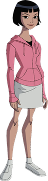
Julie Yamamoto — a esportista heroica
Julie Yamamoto
Características: tenista otimista, extremamente habilidosa e principal interesse romântico de Ben na adolescência.
Feitos: lutou contra os Cavaleiros Eternos usando as armaduras geradas por Ship enquanto guardava o segredo do namorado.
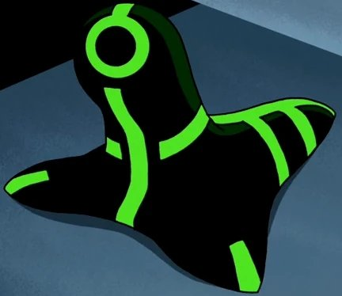
Ship — o mascote Mecamorfo Galvânico
Ship
Características: um filhote alienígena biomecânico e expressivo da espécie do Ultra T, mascote de Julie.
Feitos: fundiu-se a armaduras, carros e naves para servir como veículo e escudo principal em combates estelares.
Vilões principais
As ameaças mais marcantes que Ben, Gwen e Kevin já enfrentaram ao longo das eras do Omnitrix.
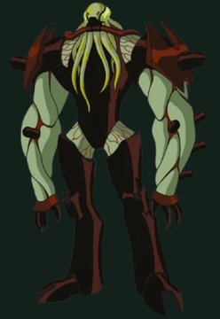
Vilgax — o conquistador intergaláctico implacável
Vilgax
Características: força aprimorada ciberneticamente, durabilidade absurda e crueldade sem limites.
Feitos: destruiu inúmeros planetas e foi a maior ameaça recorrente na tentativa de roubar o Omnitrix.
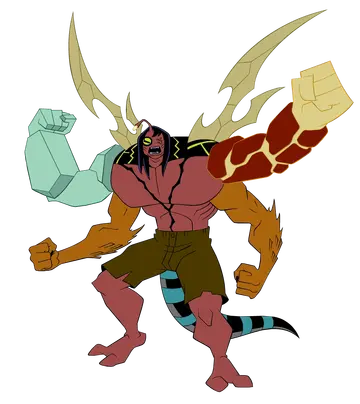
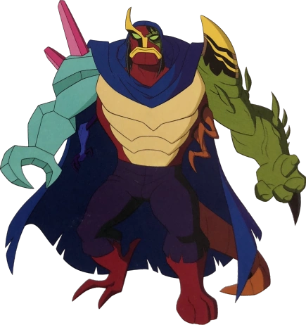
Kevin Levin — primeira e segunda mutações
Kevin Levin
Características: mutante Osmosiano com capacidade de absorver energia, matéria e DNA.
Feitos: tornou-se um amálgama monstruoso com os poderes dos aliens de Ben, um oponente quase imbatível, antes de se redimir.
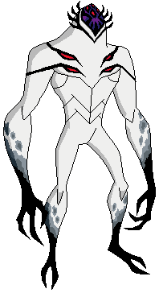
Soberanos (Highbreed) — alienígenas supremacistas
Soberanos (Highbreed)
Características: acreditam ser a espécie mais pura do universo, com imensa força física e tecnologia bélica avançada.
Feitos: lideraram uma invasão em grande escala à Terra e a outros planetas para expurgar "espécies inferiores".
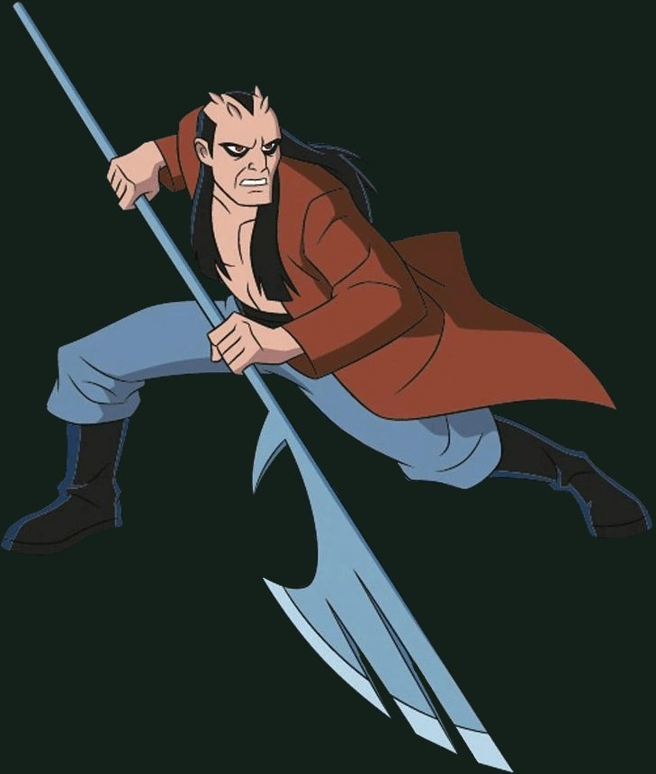
Aggregor — o estrategista frio
Aggregor
Características: Osmosiano calculista com domínio total sobre a habilidade de absorção.
Feitos: sequestrou e absorveu cinco alienígenas da galáxia de Andrômeda, quase alcançando poder onipotente no Berço da Criação.
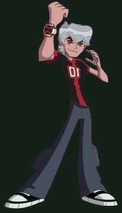
Albedo — o criador rival
Albedo
Características: Galvaniano arrogante preso na forma humana de Ben devido a uma falha genética.
Feitos: construiu o Superomnitrix (Ultimatrix) e criou formas alienígenas supremas em sua busca por vingança.
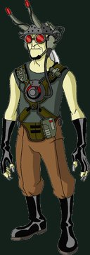
Dr. Animal (Dr. Animo) — o cientista louco
Dr. Animal (Dr. Animo)
Características: genialidade insana focada em engenharia genética e mutações forçadas.
Feitos: criou o Raio Mutante, ressuscitou dinossauros e fundiu DNA de animais terrestres com tecnologia alienígena.
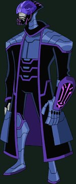
Eon — o viajante temporal
Eon
Características: versão alternativa e corrompida de Ben que controla o fluxo cronológico.
Feitos: navegou por diferentes linhas do tempo para recrutar e destruir versões alternativas do próprio Ben Tennyson.
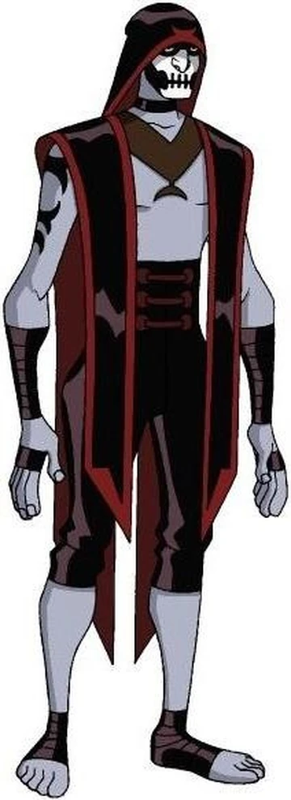
Hex — o mestre da magia
Hex
Características: feiticeiro arrogante e poderoso que utiliza os Encantos de Bezel.
Feitos: quase dominou o mundo manipulando forças arcanas que muitas vezes superam a tecnologia alienígena padrão.
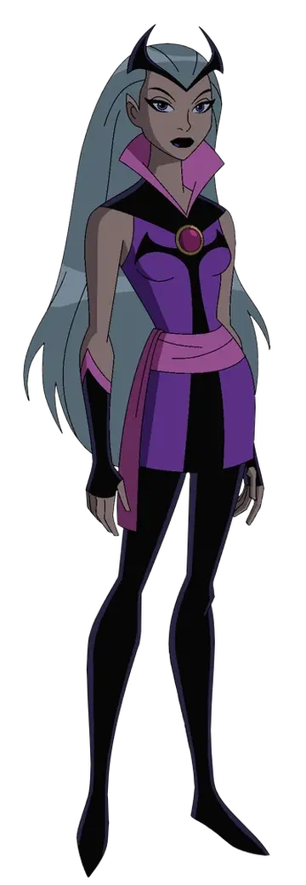
Encantriz (Charmcaster) — a sobrinha prodígio de Hex
Encantriz (Charmcaster)
Características: especialista em feitiçaria, manipulação de mana e dona de uma bolsa dimensional mágica.
Feitos: usurpou temporariamente o controle da dimensão de Ledgerdomain e drenou a força vital de milhares.
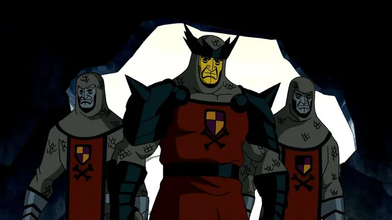
Cavaleiros Eternos — a sociedade secreta
Cavaleiros Eternos
Características: facção paramilitar focada em erradicar alienígenas da Terra.
Feitos: acumularam tecnologia extraterrestre por séculos e travaram uma guerra santa contra dragões e outras ameaças cósmicas.
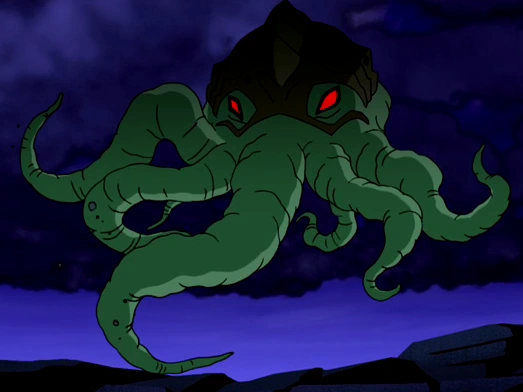
Diagon — o ser extradimensional
Diagon
Características: entidade cósmica de poder mental e mágico quase absoluto.
Feitos: corrompeu humanos, vilões e heróis, destruiu o exército dos Cavaleiros Eternos e quase converteu a humanidade em seus escravos mentais.
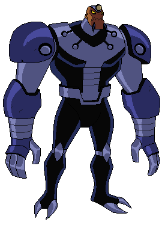
Vulcano (Vulkanus) — o mercenário ganancioso
Vulcano (Vulkanus)
Características: alienígena Detrovite obcecado por lucro e armas; esconde seu corpo (que encolheu ao tamanho de um bebê após uma explosão) dentro de uma grande e pesada armadura robótica.
Feitos: comandou parte do submundo do crime intergaláctico, tentou criar uma arma para destruir um sistema solar e quase extinguiu a vida na Terra ao tentar superaquecer o núcleo do planeta.
Hub Omnitrix interativo
Escolha uma era abaixo e gire o disco — visto de cima, como no mostrador do relógio —
para percorrer os aliens daquele Omnitrix. Cada giro emite um sinal sonoro, como no desenho.